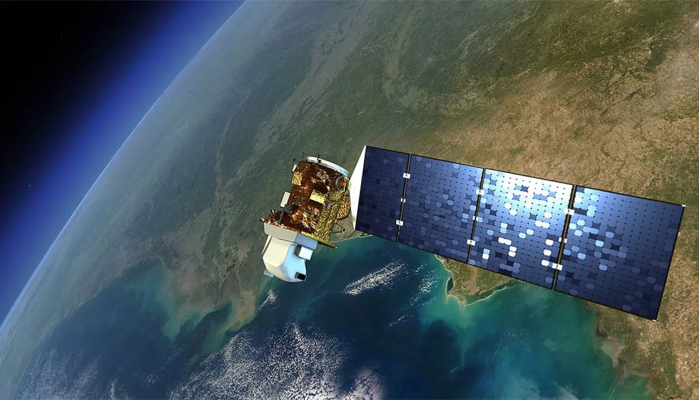

Landsat 9
Launched in California in 2021, the Landsat 9 was launched in collaboration by NASA and USGS (U.S.Geological Survey) to monitor, track and understand resources on Earth that are required to sustain our lives. As humans we havve taken over large portions of land use and have ultimately driven climate induced issues onto our planet. Landsat 9 is the only U.S. satellite system that has been set out to orbit and record both natural and human driven issues. It works alongside Lansat 8 which works at a fast rate for capturing data and can now retire the use of Landsat 7 due to its slower capabilities.
"Landsat 9" credits to NASA
Landsat Facts
- Design was built to live for 5 years- Captures about 700 Images per day
- 438 miles away from earth level
- Currently travelling at 16,760 mph